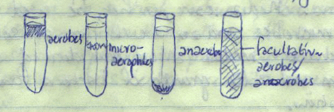
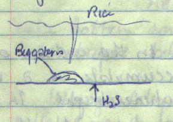
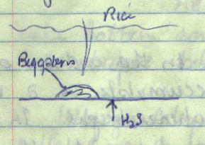
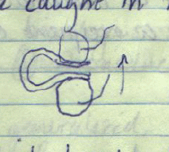
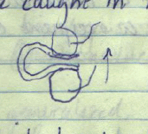

UCD Lectures
Bacteriology 2
General Bacteriology
These lecture notes from the course Bacteriology 2 taught at University of
California, Davis in the Spring quarter 1980 by Dr. Leigh Segel (?), lecturer,
with notes taken by S. M. Halloran.
These notes are enhanced
, meaning that the notes go beyond what is
actually recorded in the lecture notes , but which were probably spoken by the
lecturer, and are consistent with the knowledge of the time. Errors in
note-taking are corrected, but again, the presentation is of knowledge
understand at the time.
31 March 1980
Bacteriology and microbiology are terms used interchangably. [Although
technically microbiology covers a wide variety of micro-organisms beyond
bacteria, as defined by Merriam-Webster.]
Eukaryotic microbes include the fungi, algae, and protozoa, while prokaryotic
microbes include the true bacteria (eubacteria), blue green algae (the
cyanobacteria). Viruses are also microbial forms neither prokaryotic or
eukaryoatic. The subject of immunology is a facet of studying the effects of
defense mechanisms of an organism against its pathogens and parasites.
Bacteriology began as an exploration into the world of organisms introduced
by the invention of microscopy, which permitted discovery of the presence of
creates not visible to the naked eye. Van Leeuwenhoek created a simple ocular
lens that served as a microscope and he mounted a specimen on a plate to look
at droplet of water. His lens sufficiently likely magnified larger protozoal
forms rather than permitting him to look at true bacteria.
The kind of microscopy van Leeuwenhoek likely did was similar to darkfield
microscopy. Against a black or dark background, light from a right angle to the
lens and its viewer illuminates the specimen and this reflected or scattered
light is seen. A halo or rainbow effect outlining the microorganism's shape,
and this effect is because the lens refracts light of all wavelengths, but the
wavelengths cause different refractive angles and thus cause a visible chromatic
separation (or aberration), hence the rainbow effect. Thus this development
in microscopy marks the beginning of the study of microbes.
Compound microscopes were perfected in the 19th century and a more
comprehensive view enabled scientists to magnify a microscopic form about
300 times its true size. Phase contrast techniques were adapted to these
microscopes to enable the observation of living forms, and then eventually
electron microscopy allowed magnifications of forms to a near molecular level.
Spontaneous generation. A hypothesis had been made subsequent to the
discovery of microscopic organisms that they could spontaneously generate, that
is, come into existence where nothing was there before. The French chemist
Louis Pasteur (1822-1895) using proper scientific method eventually proved that
hypothesis to be incorrect: he boiled a flask of soup to sterilize
it.
Into the flask was glass tubing that had a bend in it such that its opening was
facing downward (to the ground). If Pasteur turned the flask at an angle to
introduce sterilized soup into the turn of the tubing, and then returned the
flask back to its normal position, with the soup in the turn of the glass tubing
returned back into the flask, the soup became contaminated
and was found
to be filled with organisms. So long as this procedure was not done, the soup
remained sterile.
John Tyndall (1820-1893), who was by trade a physicist, established many things
about the microbes. He showed that microorganisms were present in the air on
dust particles, and that there was a quantitative effect related to the growth
of organisms in a culturing environment and the amount of contaminated
air
used to inoculate the culture. He also identified a protective gametic
state of microorganisms, namely that they sporulate as a quiescent state in
unfavorable environments so as to prevent their extinction. He also looked for
ways to kill organisms in the sporulated state, a process of sterilization
called Tyndallization, which would kill spores and vegetative cells
alike. [Tyndallization is the precursor to autoclaving.] Tyndall made all
these discoveries because he was looking for ways to perform his experiments in
physics.
Other living organisms exert effects on the enviroment by their presence,
altering that environment in ways to increase their ability to live and to
reproduce in that environment, and allowing other organisms to enter that
environment adventitiously or otherwise.
In his study on the epidemiology of Bacillus anthracis, the agent
causing the disease anthrax, Robert Koch (1843-1910) developed a theory of
the diseased state, which are now known as Koch's Postulates:
- If the organism is the cause of the disease, it must be necessary to
isolate (find by culturing) that organism from the diseased host
- The organism must be cultured as the only organism (a pure culture)
- It must be possible to take the organism isolated in culture and use it
to infect another member of the host species and to re-observe the progress and
symptoms of the disease
- Finally, it must be possible to perform steps 1 and 2 on the newly and
purposely infected member of the host species: to re-isolate the organism
and find it pure in culture.
Bacteriology is not only the study of bacteria that are pathogens, that is,
as microbes causing disease. It is also the study of bacteria that can be
put to use for the benefit of human progress: in food production, medicine,
and even nonbiological processes that include engineering.
2 April 1980
Methods of Microbiology
From the previous lecture, notes were taken about the contributions of
van Leeuwenhoek, Pasteur, Koch, and Winogradsky.
[Note: the previous lecture notes did not include Winogradsky and must have
been missed by note-taker. Sergei Winogradky (1856-1953) was a Russian
microbiologist who made many contributions to the field. A principal
achievement was in the ecology of bacteria and how the many forms of bacteria
which are chemo- and phototrophs existed in a cycle which could be a closed
ecosystem. The Winogradsky column is a sealed collection of water and soil
components effectively representing aerobic and anaerobic forms, and the only
input required to the system is energy in the form of light for photosynthesis.]
The first step in observing properties of bacteria or viruses is to obtain a
pure culture of the organism from a mixed culture. It is necessary to sterilize
the materials used in culture first. For this sterilization, the following can
be considered:
- Dry or moist heat can be used for sterilization. Dry heat is obtained by
using (convection) oven but is less efficient than moist heat. Use of moist
heat is obtained by an autoclave, which is a pressurized steam applied
for about 20 min.
- Chemical sterilization is used principally for plastic materials that can be
damaged or altered by use of heat. Ethylene oxide
(..CH2-CH2-O.., where .. show a ringed molecule) is a
powerful oxidizing sterilizing agent.
- Filtration using a micropore filter can be used to sterilize solutions
and reagents. The pore size of 0.22 µm and 0.45 µm will keep most
bacteria retained, although not any products secreted by them or released by
lysis. Some bacteria are quite small however, like mycoplasma.
Once (glassware) containers are sterilized, a decision is made regarding the
kinds/types of media used to support culture. The media should be selected to
support the bacteria specifically in most cases, and not support a broader range
of organisms. In general the elements essential for the nutritional
requirements of microbial life include carbon, oxygen, nitrogen, hydrogen,
phosphorus, sulfur, sodium, chloride, potassium and lesser amounts of magnesium,
iron, and calcium, and trace amounts of zinc, manganese, and copper. This list
is not exhaustive. Inorganic elements are used by autotrophs who make
use of photosynthetic processes to produce organic (carbon-based) substances
used by heterotrophs. Depending on the organism and the type of trophic
growth, other essential substances required for growth include amino
acids for proteins, purines and pyrimidines for nucleic acids,
and vitamins used as coenzymes in catabolic and anabolic metabolism.

Metabolic needs are different among each species of bacteria. Many have adapted
to certain needs. One characteristic is the use of oxygen used by microbes.
The following classes are used to define microbes according to their use of
oxygen.
- Aerobes require oxygen.
- Microaerophiles require oxygen but not at normal atmospheric tension.
- Anaerobes do not live in the presence of oxygen.
- Facultative anaerobes have adapted to the presence and absence
of oxygen.
Occasionally during metabolism of nutritive substances, hydrogen peroxide
(H2O2) is formed which is an extremely powerful oxidizer,
and which must be broken down, converted or neutralized because of its chemical
reactivity. The enzyme catalase serves the purpose of protecting
organisms of all kinds in aerobic environments from the side effects of oxygen
chemistry while permitting the major benefits of living in oxygenated
environments. Catalase is found in aerobes and facultative anaerobes. The
reaction catalyzed by catalase is: 2 H2O2 →
2 H2O + O2, products which are relatively harmless.
Another dangerous side reaction of oxygen environments is the formation of
superoxide anion, O2−, another highly reactive
oxidizing agent. And just as catalase exists to remove highly reactive
superoxide anion, the enzyme superoxide dismutase also converts
superoxide. The reaction requires a mildly acidic environment or at least the
ability to obtain protons: 2 O2− + 2 H+
→ H2O2 + O2. Note that one of the
products is hydrogen peroxide, which will then become a substrate for catalase
to eliminate it.
Growth or culture medium. Aside from providing or not providing an
oxygen environment for bacteria, there is the need for a nutritive medium.
Media can either be liquid or solid.
A medium that is solidified or gelled is often more desirable since it is
generally less messy and it is actually easier to inoculate with the organism.
The preparation of the medium actually requires adding the nutritional
components (often as a dry powder) to pure water (usually distilled and
deionized water), which is sterilized in an autoclave (pressurized steam oven).
Some chemical components (nutrients) are not able to withstand the heated
water (at elevated temperature of 121°) for the 20 minute period, and
so these components are usually dissolved in previously sterilized water as
a concentrate (the concentration might be 20-100 times the final concentration),
then sterilized by filtration. An aliquot (small volume) is then added to the
autoclaved medium to attain the final composition of the medium. [If the
concentrate were 20 × the final, then the aliquot would be the larger
volume of the liquid medium divided by 19, or if it were 100 ×, it would be
the larger volume of the medium divided by 99. This can be derived algebraically.]
After the liquid medium is created, another component added to it is agar,
which is a complex polysaccharide obtained from algae (it can be sterilized
in the autoclave). Between 0.5 grams and 2 grams of agar can be added per
100 ml final volume (a concentration of 0.5 to 2%) and when the hot medium
cools to room temperature, the entire medium gels or solidifies quite rigidly.
In most cases, the nutrients provided as a culture medium, whether liquid or
solidified by agar, are complex or undefined: that is, the
chemical composition is not known with respect to what nutrients there are and
the quantity of each nutrient. Extracts of yeast cultures which are dehydrated
and offered as a powdered mix; food substances such as eggs or meat or blood
which are dehydrated and ground into powders; and many other potential
substrate
can be used as the nutritive medium.
In contrast a synthetic or defined medium can be composed, in which
each chemical component is known as to type and quantity, can be added to
the pure water solvent and dissolved into it. This is especially vital if
a selective medium is to be made to prevent or limit the growth of unwanted
organisms. A glucose-minimal is one such medium: it contains mostly
inorganic salts to allow for the growth of auxotrophs, and it contains one
important organic (carbon source) chemical, glucose. It might also contain
various supplements, depending upon what is understood about the biology of
the desired organism(s).
To review, a complex medium or undefined medium has components
generally obtained from extracts of organisms like yeast, or the tissues of
higher organisms, while minimal medium or synthetic medium or
defined medium refers to a medium whose component identities and
quantities are precisely known and prepared because much is known of the
biology of the organism to be cultured.
No single medium will support the growth of all known species of bacteria, a
although a rich (i.e. complex, undefined) medium will certainly cover a broad
range of bacteria. Microbiologists purposely create a selective medium
(usually those minimally necessary, a defined medium) in order to permit the
growth of only one or some species. Often the minimal or selective medium,
while supporting the growth of the desired organisms, does not allow for a
fast rate of growth. So perhaps after a selective or minimal medium
is used to allow enough of the desirable organism to grow in sufficient
quantity, it is then transferred to an enrichment medium which is
less selective, less minimal, more rich or more complex, and then the rate
of growth accelerates tremendously. While that enrichment medium would
support a broad range of bacterial types, only the selected bacterial types
grow, since they are the only types present.
Some media incorporate chemicals that are diagnostic dyes, such as
eosin or methylene blue. The presence of these dyes might be processed by
certain bacteria in a way that distinguishes them from other types of
bacteria. When part of a solidified medium (agar plate), E coli
colonies will appear as a green color on a plate containing methylene blue
dye. Dyes and stains are discussed later.
4 April 1980
Microscopy
[there is a note that this a continuation
of a lecture on microscopy
(?)]
Properties of visible light and other electromagnetic radiation are that
they are oscillating sinusoidal waves of two fields, an electric and a magnatic
field which travel as the speed of light perpendicularly to each other.
Both the oscillating amplitude fields are in phase with each other. Now
if all of the emitted waves of light (EM radiation) were themselves in phase
with each other, the light is coherent. Laser light produces this effect.
But the source of the light that produces that light (lamp light) in most
cases is not in phase.
Light waves moving from one medium, such as air, to another medium, such as
water or glass (as the material of a lens) undergo changes in the angle of
direction, which is called refraction. If the interface or boundary
between the two media is a flat surface in two dimensions, then the angle by
which the light leaves one medium with respect to the perpendicular of the
surface and the angle in which it emerges into the other medium with respect to
its perpendicular to the surface is a function of the refractivity of the two
medium, which is given as a refractive index. These are fundamentals of
the concept in physics known as optics. Lens and angles of refraction are
exploited in microscopy to achieve magnification and resolution.
Magnification is computed from the distance of a real object to the axis of the
lens and to the distance of the image of that object, which can be real
if the image is on the other side of the lens, or virtual if it is
actually on the same side of the lens as the object. In practice, a series of
lenses with different indices of refraction and cut with different or varying
curvatures are used in the microscopy of bacteria. Resolution is the ability to
resolve sharply two points from one another in the process of magnification.
Microscopy also depends on contrast, which allows perception of shapes
and or structures to the eye: dark objects against bright backgrounds or
bright objects against dark backgrounds is what contrast is, and what good
microscopy requires.
In fact, brightfield microscopy is the concept of putting dark objects
against a field of bright (white) light. The darkness
of the object is
usually provided by staining it with something to make it dark: color dyes work
too, since color is perceived in white light; and color is usually necessary to
provide contrast in bacteriology.
Phase contrast microscopy is another way to achieve dark objects against
a bright background: it does this by using special annular rings made of
different materials that, as the illuminating light passes through, inner and
outer rings of light focused on the specimen are out of phase with one another.
This causes constructive and destructive interference with each other, making
the light bright iin some places and dark in another. But this can be altered
by the presence of objects on a specimen surface, and this combination of
light interactions with objects in the specimen can provide the contrast to
observe them without the need to artificially darken them with stains or dyes.
The process of staining or dyeing an organism usually requires treating them with
chemicals that kill them and fix them into place for coloring/staining. With
phase contrast, sufficient contrast can be achieved to allow them to be visualized
while alive, swimming/moving in a supportive or natural medium, and to observe
an activity not possible if they are killed and fixed to the specimen surface.
Darkfield microscopy is essentially the reverse of brightfield microscopy
in one characteristic: instead of dark objects against bright fields, they are
bright objects against a dark field (hence the names of these forms of
microscopy). In brightfield, the source light is focused by a condenser lens
behind the specimen, the light passing through the objective lens assembly
(where it is magnified) and then into the ocular lens (magnified again) and to
the observer. With darkfield, a stop is placed at the center of the light
focused by the condenser, and light from the outside the diameter of the stop
allowed to pass through. This has the effect of bringing light in from the side
and not directing to the eye of the observer. If there is nothing on the
specimen, complete darkness (blackness?) is observed. But if any object exists,
light reflects off of it into the objective lens, where it is observed by the
eye of the microscopist. Since coloring/staining of objects would not make
sense in darkfield, and these processes kill the bacteria, darkfield can also be
used to view living organisms just as with phase contrast. In particular, the
highly motile spirochete Treponema pallidum which causes syphilis can be
observed darting across the darkfield.
Electron microscopy (EM) is performed using electrons produced from a
heated cathode and then accelerated in a high vacuum toward the specimen.
The lenses
in an electron microscope that achieve magnification and
resolution (focusing lenses) are really magnetic fields. The electrons strike
the specimen. The specimen is not the actual biological object, but rather
a finely layered, usually metal (or heavy atoms by atomic weight), coating that was treated or sprayed on to
the original object. Where metal or high atomic weight atoms are present, they
have electrons in multiple orbiting shells: this causes the beam of electrons
aimed at them to be deflected from their path (like charges repel) or scattered
backward. Where no metal or heavy atom coating exists, the electrons pass
through. With transmission electron microscopy (TEM), a film or detector plate
sensitive to electrons is placed with the specimen in between the electron
beam source and the film/detecting plate. Electrons that are deflected would
create the effect of darkness (something is there/present) on the film/detector
plate, while electrons passing directly through show up as a brightness.
Thus TEM is just a form of very high magnification brightfield microscopy.
Another kind of EM is scanning electron microscopy (SEM), in which
the back scatter of electrons is collected on a detecting plate, and this
is visualized as a three-dimensional representation of the object. While it
produces fascinating images, magnification is not as good as with TEM. With
EM, resolution is a function of the diameter of the primary electron beam,
magnification is a function of the area scanned, and contrast is a function
of many factors than include optimal voltages (acceleration0 and the types
of metal coating used.
Specimen preparation in EM is quite important to succesful EM work.
Metal shadowing is achieved first by fixing the cells on to a grid, and
then spraying them with a gaseous heavy metal. The spraying is not uniform:
it is done from one side, so that one side of the specimen gets coated
(or relatively more coated) and the side not in the direct spray zone is
not coated or relatively less coated. The electron-dense metal used is
often gold. See figure above.
Thin section microscopy requires the use of increasingly stronger
concentrations of alcohol to fix the specimen. Then this is diluted with
less polar solvent, followed by fixation or staining with the heavy metal
gaseous aerosol. Since cutting or sectioning will be done, the metal
coat must be stabilized against the cutting action: this is done by embedding
everything in a resin which is relatively transparent to the electron beam.
After the resin hardens, then a microtome can be used for sectioning.
With freeze-fracture EM, the specimen is frozen within a paraffin block.
The block is then hammered to break it off. Finally the surface of the break
is coated with electron-dense metal salt (or gold), and then visualized.
There are clear advantages and disadvantages to each method, and much depends
on the application to be done.
Prokaryotic Morphology and Physiology
Prokaryotes contain an intracellularly located single haploid genome in the form
of a circular chromosome. Other basic cellular features are a protoplasm with
microscopically resolvable ribosomes, cell membranes, and located outermost,
cell walls. In addition, some bacteria have a more outermost structure which is
a capsule, which is effectively part of the cell wall and making it a different
type of cell wall. Another remarkable feature in many microbial forms is
motility. This motility is achieved typically by one flagellum or more
than one flagella. A flagellum is composed axially of an arrangement of
microtubules.
7 April 1980
Prokaryotic Cell Wall: Composition, Morphology, Physiology
The structural and chemical nature of the cell wall is discussed in parts.
The Capsule: Structure and Function
If present, the capsule of a cell wall is a loose layer of slime
often having a structural based composed (mostly) of a polysaccharide.
The capsule can be described as very loosely held or attached and amorphous
(non-crystalline, or not highly ordered in a crystalline fashion). The
function of a capsule is typically to cause adhesion to the mucus—also
a chemically complex layer with a polysaccharide structural basis—of
a host organism, particularly where the bacteria is a commensal organism or
pathogen to the host.
A good example of where a capsule is formed and used in adhesion is
Streptococcus mutans, which makes a home in the human oral cavity, often
the microbe responsible for dental caries, since it adheres to the tooth
surface. The organism likes a sucrose substrate, since it can use the glucose
to make the polysaccharide base for the capsule, and use fructose as an energy
source. Since it is a fermentative organism, it produces a final product of
lactic acid, which can degrade the tooth enamel that results in caries.
The dental plaque that forms on the tooth surface is in part the capsular
material of these bacteria.
Beside adhesion, the capsule also provides the function of resisting
phagocytosis by host defense reticulocytes. The polysaccharides forming
the capsule are often modified with chemical groups that confer an anionic
(negative) charge to the polymer. The plasma membrane of phagocytic cells
is composed of phospholipids which are too quite anionic. Thus on a physical
basis of electrically charged molecules having the same polarity, there is a
general repulsion which serves a small purpose in avoiding phagocytosis.
The capsule of Streptococcus pneumoniae is modified to exaggerate
the amount of negative charge and thus achive resistance this way.
The use of India ink negative staining also reveals that members of Clostridium
have a thick capsule. These organisms within the rumen of the cow attach
their capsule and assist in the digestion of cellulose of the hay ingested
by the cow. Organisms that live in the intestines will attach by their
capsules to the microvilli that form the epithelial cell layer. Often these
organisms are symbiotic with the host, perhaps assisting in digestion,
or even producing nutrients such as vitamins used by the host.
Gram Stain
A major classification of bacteria for a long and contiuning period is the
difference in staining, which is the difference in chemical reactivity of
two types of cell walls to the staining chemistry. This chemistry is called
the Gram stain after its discoverer. There are three basic steps
to the Gram stain:
- After the bacterial preparation is dried and possibly warmed or heated
on a glass slide in order to
fix
it, it is treated (often incubated
by immersion in a slide jar) with crystal violet and then in a special preparation
of iodine (Gram's iodine)
- It is then washed in 95% ethanol for a certain period: this is used to
decolorize it except for some cell walls, which are not decolorized, but retain
the purple color.
- Finally it is
counterstained
with safranin.
When complete, some bacteria will have a purplish color, making them
Gram-positive bacteria, and others will have a reddish color, the
Gram-negative bacteria.
This method for Gram-staining must be followed strictly. For example, if the
alcohol washing of the second step is not followed precisely, the results
can be unexpected. Proteins were labeled metabolically with 32P,
and then different concentrations (as a percentage) of alcohol were used during
the Gram staining process. A plot of 32P vs percentage alcohol used
shows that some of the stain is washed out, but not all of it.
Peptidoglycan (see figure at left) is a special polymeric molecule common
to both Gram-positive and Gram-negative cell walls. It is composed of a
co-polysaccharide (alternating monomers) of N-acetylglucosamine (GlcNAc)
and N-acetylmuramic acid (MurNAc), with an β1→4-glycosidic bond
for both types of glycosidic bonds. An acyl bond to the lactic acid moiety of
MurNAc is composed of either a tetrapeptide or pentapeptide, depending on the
bacterial species. The amino acids that compose the peptide are composed of L-
amino acids, which normally make up proteins, and at least one or more D-amino
acids, which are never translated into proteins by ribosomes. The existence of
the D-amino acids probably confers resistance to many proteases which might be
used in immune defense systems to break down protein-based cell walls and
structure; the proteases only work on polypeptides with L-amino acids for the
most part. The tetra- or pentapeptide sequences between different
polysaccharide chains will crosslink with each other to strengthen the cell
wall. And layers of polysaccharide chains will be formed to produce the final
wall.
The enzyme lysozyme is a normal component of phagocytic defense cells
in bacterial hosts which specifically hydrolyzes the β1→4 bond
of MurNAc-GlcNac. (Note that it does not hydrolyze the β1→4 bond
of GlcNAc-MurNAc in the copolysaccharide.)
The presence of the antibiotic penicillin causes a failure of the
enzymes involved in the crosslinking of the oligopeptides to perform that
crosslinking. Penicillin binds to those enzymes, stopping their catalysis.
This weakens the cell wall, and make the bacterium susceptible to plasmolysis,
which is the bursting of the cell through its membrane when the bacterium
is put into a hypotonic environment, yet another means of defense against the
bacteria. When grown in culture (in vitro) in penicillin, bacteria are still
alive, but without a cell wall. This is a protoplast form. When placed
in a hypotonic environment, lysis is immediate. This does not happen with
bacteria that are not grown in penicillin, in which they have a normal cell wall.
In general, bacteria will peptidoglycan-based cell walls will not reproduce
if they cannot effectively produce a chemically correct peptidoglycan structure,
and so growth in numbers is prevented.
A major difference between Gram-positive and -negative bacteria is the thickness
of the peptidoglycan layers. Peptidoglycan forms the fully outermost layer of
the cell wall in Gram-positive cell wall, and is much thicker with
peptidoglycan. In Gram-negative cell walls, peptidoglycan is effectively only a
monolayer and is not the outermost component layer of the wall. The outermost
layer is yet another phospholipid membrane bilayer typical of any cell membrane,
but with a special complement of proteins and also lipopolysaccharides (LPS):
special phospholipid with four alkyl chains and esterified to special
polysaccharides (these are endotoxins).
Certain bacterial groups called mycoplasmas lack the cell wall entirely.
That is, they just have a cell membrane. Thus antibiotics have no effect on
preventing their growth, although they are susceptible to changes in osmolarity.
Typically mycoplasmas do not have free-living forms like bacteria with cell
walls. They require the body fluids of a host organism to provide them with
the isotonic environment to maintain their physiology. In contrast, a cell-walled
bacterium like Eschericia coli can live inside and survive outside the
body of a host.
Other noticeable microscopic structures in bacteria are the presence of a
pilus (plural pili) and a flagellum (plural
flagella). A flagellum has the structure and function of providing
motility for bacterial species that possess it. A pilus provides the ability
of members of the bacterial species to create intercytoplasmic connections
between each other, and especially for the purpose of exchanging genetic
material with each other.
9 April 1980
In the previous lecture, there was a discussion of many ultrastructual features
of the cell wall and extracellular structures. Gram-positive walls have several
layers of crosslinked peptidoglycan to strength capsular material. With
Gram-negative walls, there is an outermost phospholipid bilary membrane
and a loose layer of peptidoglycan beneath it, between the outer membrane
and the regular cell (cytoplasmic) membrane.
This outer membrane in Gram-negative bacteria is not like its cytoplasmic
membrane. It has a special set of membrane proteins. But what is particularly
important is that it has a specialized (phospho)lipid structure that includes a
linear polysaccharide (a lipopolysaccharide or LPS) on the outer face of the
bilayer. This is a lipopolysaccharide is called lipid A, which is an
endotoxin. Its presence causes a hyper-reaction of immune cells to
secrete substances that cause the symptoms of severe illness, especially fever,
edematous localized fluid buildup, among other reactions.
Within the periplasmic space of Gram-negative cell walls are proteins
that counteract the presence of antibodies produced by the host and which might
diffuse across the outer membrane. Proteins in this part of the cell wall
also bind to trace metal elements, which often provide an oxidizing or
reducing function to proteins: it is thought that these too are utilized
to counteract host defenses, which include producing oxidizing chemicals
like peroxide and superoxide. A function of lipid A might be to repel or
alter the binding of antibodies. When antibodies bind to bacteria, they attract
phagocytic cells, which use the antibodies as a means of identifying foreign
bodies within the host. If antibodies do not bind, there is no phagocytosis.
Bacterial Cytoplasmic Membrane
Prokaryotes in general do not possess the subcellular structures of eukaryotes
that make up organelles. Organelles are a way that eukaryotes compartmentalize
specific biochemical and biological functions, and are thought to represent
an evolutionary advance. [In fact, some organelles are thought to be instances
where a cell ingested
, or rather, incorporated a smaller cell with
specialized function into its cytoplasm, and then lived in symbiosis with it,
providing it a protective environment, while in turn, deriving the benefits of
the smaller cell function.]
The only real organelle-like structure prokaryotes have is a cell (cytoplasmic)
membrane, which creates a boundary to retain all the components of the protoplasm.
The prokaryote relies on the cytoplasmic membrane for many biochemical functions
which are performed by organelles in eukaryotes. It has properties and features
as follows:
- active and passive transport of nutrients into the cell and waste or end
products out of the cell
- performance of cellular respiration to produce the energy the cell requires
for every physiological activity
- in phototrophs, the performance of photosynthesis
- in nitrogen-fixing bacteria, the specialized components for performing
fixation: N2 → NH2—(CH2O)n
- segregation of duplicated (daughter) genomes during cell fission
The cytoplasmic membrane is composed of 30% phospholipid and 70% protein over
the area of the membrane surface. Some noticeable differences with eukaryotic
cytoplasmic membranes is that the prokaryotic membrane lacks cholesterol.
The presence of cholesterol in cytoplasmic membranes appears to provide them with
a greater fluidity at the temperature range of most multicellular eukaryotes,
which is somewhere between 25 and 40° C, depending on species (for humans,
it is 37°). Without cholesterol, the cytoplasmic membranes would tend to
crystallize
and this would inhibit the lateral movement or diffusion of
cytoplasmic membrane components, which must maintain a proper diffusion rate
to take advantage of nutrient infusion and defense against harmful elements.
Aside from cholesterol, membrane fluidity is also affected by the structure
of alkyl chains of the phospholipid: the insertion of some cis-double
bonded structures (unsaturated fatty acids) creates a greater fluidity.
Prokaryotes likely achieve their necessary fluidity in these ways, without
cholesterol.
Flagella
Flagella are the means of locomotion upon which many bacterial species depend
or have adapted to their genetic structure.
Bacteria can produce flagella completely (and seemingly at random) around the
entire perimeter (surface), called peritrichous flagella. Alternatively
they can develop one or more flagella from one area on the surface, typically
a polar end of rod-like bacteria: thus these are called polar flagella
(see figure at right). Flagella actually have a fine structure that is shown
in detail in the figure below at left. Flagella, particularly the polar
variety, are maintained by intracellular skeletons typically of the same kind
that help to maintain a rod-like (bipolar) shape to bacteria, or else locomotion
would be unproductive.
Bacteria with locomotive abilities purposefully move in a unidirectional
fashion, often attracted to certain chemicals (like nutritive substances), which
is chemotactic movement, or to light, which is phototactic
movement. When they change direction, again purposefully, this change in
direction is called a twiddle. Twiddles are more frequent when there is
no chemical or light attractant in the medium. But when a chemical or light
source is added, twiddles are less frequent, and net movement is ultimately
toward the source.
Pili (Fimbria)
Hair-like cytoplasmic extensions project from the bacterial surface and cause
an adhesion to other cells. A projected extension is called a pilus
(plural pili), and this extension is composed of proteins on its surface
that possess the chemistry to create the observed adhesion. These proteins
effectively are specialized ligands that bind to other proteins (receptors)
on the surface of the other cells. The other cells do not have to be members
of the same species. In fact, Neisseria gonorrhea uses pili to create
an attachment to the epithelial mucosal cells in the vagina, penis, and urinary
tract.
Research efforts are underway to effect detachment of pili, since pathogenic
bacteria often use these to establish colonization and infection in the host.
It has been observed that mannose disaccharides can bind to the oligosaccharide
portion of a glycoprotein in the pilus, and thereby prevent attachment of the
pilus.
Other features of bacterial structure to be discussed in future lectures
include:
- the bacterial chromosome
- extrachromosomal genomes: plasmids, which have genes coding for antibiotic
resistance, transfer of DNA between members of the same or related species
(intra- and interspecific DNA transfer), and toxins
11 April 1980
Bacterial Cell Biochemistry and Molecular Biology
Ribosomes, Antibiotics, and Resistance
From prerequiste courses and knowledge, recall the functions
of the transcription of genes into RNA and the translation of that RNA into
proteins by ribosomes. The distinction between eukaryotic and prokaryotic
ribosomes is one based on their ultracentrifugal sedimentation rate, which is
70S for prokaryotes and the slightly faster sedimenting 80S for eukaryotes.
[The unit S
is the Svedberg unit, a rate of molecular movement in a high
gravitational field created by ultracentrifugation.] Ribosomes at least
in prokaryotes are composed of an RNA polynucleotide special to ribosomes,
called ribosomal RNA or rRNA (60% by mass), and proteins also
special to the structural creation of the ribosomal, which are ribosomal
proteins (40% by mass).
Many of the antibiotics used to fight bacterial pathogenesis and the prevention
or destruction of bacteria use the prokaryotic 70S ribosome as a target.
Chloramphenicol, streptomycin, erythromycin...all specifically interact with
components of the bacterial ribosome. They do not interact with the eukaryotic
80S ribosome, and thus can be used safely.
[There is note here about the example of the antibiotic streptomycin and how
bacterial plasmids exist to neutralize the effect of streptomycin, and to create
resistance to the antibiotic.]
Special Biochemical Features of Prokaryotes
Some biochemicals are quite important to prokaryotes, either as starting
substrates or storage forms or metabolic energy. These are often distinct
from eukaryotic cell storage forms of energy.
Polyhydroxybutyrate (PHB) is an ester lipid and a form of the
storage of fat. When conditions of excess carbon and limited nitrogen occur
in the bacterial environment, genes are turned on for the biosynthesis of PHB.
Volution is a process by which bacteria synthesize long esteric forms
of phosphate (polyphosphate). This may be a way of storing the energy
of ATP when it builds up in excess. The breakdown of polyphosphate would be
used to recover the energy in the form of ATP when it is again required.
In addition, polyphosphate synthesis may well be involved in maintaining an
osmotic balance in the bacterium under certain conditions.
Prokaryotes can make glycogen as a storage form of excessive glucose.
Energy & Metabolism
Bacteria utilize inorganic and organic substances which confer upon them
auto- and heterotrophy, respectively. Carbon is essentially in or utiliized
reduced form with high chemical potential, and catalysts are used in controlling
energy transfer. This transfer occurs when the electrons from carbon during
its oxidation are transferred to energy storage forms, such NAD+
and NADP+
NAD+ + 2 e− + 2 H+ →
NADH + H+
NADP+ + 2 e− + 2 H+ →
NADPH + H+
Carbon and Energy. Energy for bacteria is obtained either from light
(sunlight) or chemicals. Heterotrophs obtain their carbon from carbohydrates
(CH2O), while autotrophs obtain it from carbon dioxide
(CO2).
Electron transport. In virtually all metabolic processes, a high energy
compound is oxidized (that is, electrons are removed) and these electrons are
moved in a series of reactions to produce the energy. As the end of the series,
the electrons must have an acceptor. In aerobic metabolism where oxygen
environments are present (facultative anaerobosis) or even required (aerobosis),
the electron donor is a carbohydrate sugar. The electron acceptor is the oxygen
molecule (O2); this sort of electron transport can yield significant
energy. Where anaerobic environments are present, facultative anaerobes are
capable of fermentation, in which the electron acceptor is another organic
molecule. The starting carbohydrate might be metabolized down to lactic acid or
ethanol with release of carbon dioxide. Some bacteria can use electron acceptors
such as sulfate (SO42−), nitrate
(NO3−, and phosphate
(PO43−). These are fully anaerobic environments.
14 April 1980
In the previous lecture a discussion of catabolic and anabolic processes
was given. This included discussion of respiration, in which the energy
released from oxidation of high energy organic molecules (like sugars and
carbohydrates) are transported through a series of reactions to an acceptor,
which is usually an inorganic molecule. To review, common electron acceptors
are:
- O2: required for obligate aerobes, and preferred but not
required by facultative anaerobes
- NO3−: can be used by microaerophiles and
facultative anaerobes
- SO42−: used by the obligate anaerobes which
are members of the sulfur bacteria. The product is usually hydrogen sulfide
(H2S). The genus Desulfovibrio is a classic example.
The Desulfotomacular group utilizes hydrogen sulfide (H2S)
as an electron acceptor, where iron metal is the donor: H2S +
Fe → H2 (g) + FeS.
The ultimate desire in catabolic processes is to store energy into readily
convertible ATP. The generation of ATP works on the well-established
chemiosmotic theory. Aerobic respiraation requires a membrane, a
separation between compartments essential to mitochondrial function.
Electron transport commences after NADH is oxidized by membrane component
enzymes and cytochromes. During transport according to theory, protons
(H+) are moved across the membrane, with movement from inside going
to the outside. A proton gradient forms, and this is used to drive the ATP
synthase reaction: ADP + Pi → ATP.
While the high energy electron donor substances are typically organic,
they can also be inorganic. Inorganic donors are oxidized, and this use
of inorganic donors is found only in prokaryotes. There are four major
groups employing inorganic-type electron donors:
- Nitrifying bacteria: ammonia is oxidized to one of two forms of nitrates:
NH3 → NO2− → NO3−
- Sulfur bacteria: oxidize sulfide to sulfate: H2S →
SO42−,
S2O32− → SO42−
- Iron bacteria: Fe2+ → Fe3+
- Hydrogen (H2)
Organisms utilizing organic substances as their electron donors (energy sources)
are called organotrophs. Those utilizing inorganic energy sources
are classed as lithotrophs. The table below summarizes the nomenclature
consistent with the energy, proton/electron donor, and carbon source:
| Energy | H+ / e− donor | Carbon source
|
|---|
| chemotroph | organotroph | autotroph
|
| phototroph | lithotroph | heterotroph
|
Photosynthesis. The reducing poower of light energy is used, in which
light stimulates a photoreceptor. Photosynthesis cycles involve a set of
dark reactions (light-independent) in which CO2 is fixed
into organic molecules. Photophosphorylation is another facet of photosynthesis,
and is an easy way to generate ATP from light. This reactions are shown in the
figure below.
Nitrification. This occurs as a result of the oxidation of ammonia
(NH3) in two step, as shown
16 April 1980
Reduction Potential of Biochemical Reactions. The figure below shows the
complete photosynthesis scheme with the electrochemistry of chlorophyll
a. The first chlorophyll to evolve for photosynthetic purposes,
that is, changing light to chemical energy, was very different than the
common plant chlorophylls. This chlorophyll was not able to oxidize water
nor could it reduce NADP+. The power of this chlorophyll was not
great.
This chlorophyll was the bacteriochlorophyll. Using carotene pigments
(as antennae) to receive light, this gave purple and green bacteria their
characteristic properties. In the scheme below, bacteriochlorophyll is shown
reducing Compound Y which then transfers the electrons (reduces)
ferredoxin.
The difficult step in this scheme is the reduction of ferredoxin which
is directly involved in NADPH production. The H2S molecule
which gets oxidized in this bacterial photosystem is not a powerful
reducing agent: alone it cannot reduce NADP+. A system of
reverse electron transport
is employed in which stores of ATP
are used to drive the reduction of NADP+. This is also shown
in the scheme.
Cyanobacteria (Blue-Green Bacteria). The blue-green bacteria actually
show a broad spectrum of colors, not just blue-green. The different colors
are a result of the accumulation of antenna pigments they may be employing.
The cyanobacteria are aerobic organisms capable of fixing N2.
But nitrogen fixation is possible only in an anoxic environment: no oxygen at
all. As shown in the figure below, among the chains of the bacteria (they
usually like to form filamentous communities), some of them undergo a
differentiation to a cell type called the heterocyst. The heterocyst
shows a thickened wall under the microscope, standing out from the other
bacterial cells. The heterocyst is no longer photosynthetic: it must not make
(express) the genes for Photosystem II, which is responsible for making the
O2 molecule from the H2O molecule. The heterocyst survives
by using reduced inorganic salts.
Note that the cyanobacteria are ubiquitous in the biosphere because of their
diversity and simple nutritional requirements. They show locomotion via
gliding motility.
Purple and Green Sulfur Bacteria. These bacteria are strict anaerobes.
Their colorful appearance is because of a variety of antenna pigments and
bacteriochlorophylls. The purple bacteria use sulfuer and nonreduced compounds
other than sulfur in their metabolism.
18 April 1980
 

 
